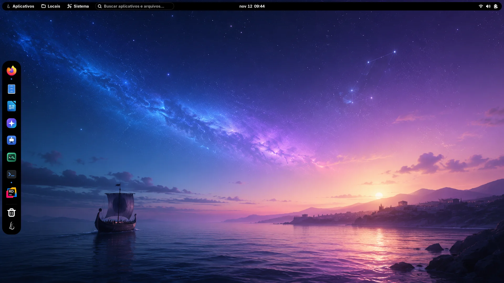
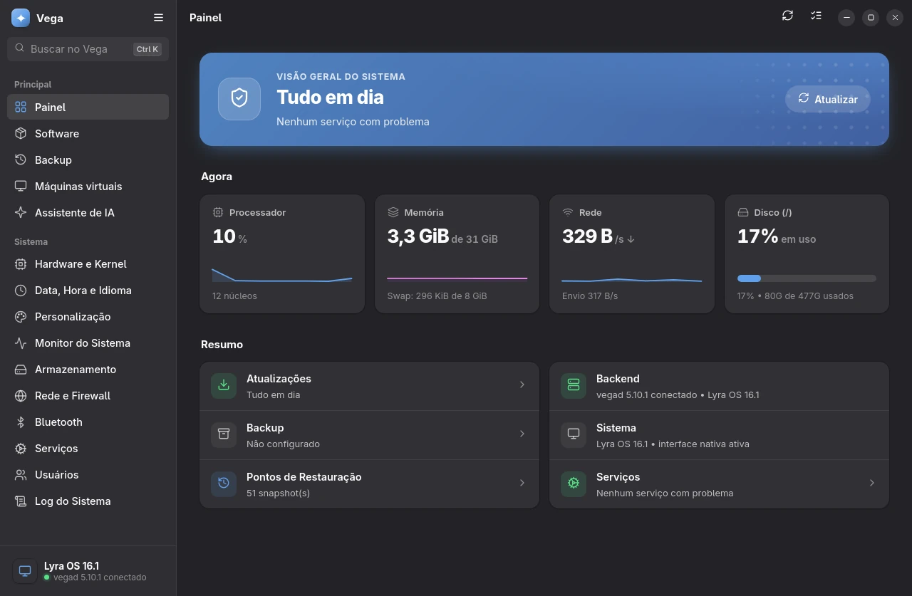

Interface clara e consistente
GNOME limpo, com tema, ícones e tipografia afinados para que tudo pareça parte do mesmo sistema.
Um sistema feito para encontrar o equilíbrio entre potência, estabilidade e liberdade — no desktop e no servidor.
Faça parte dos downloads do Lyra OS

A ideia
Lyra OS é um projeto pessoal independente de Rodrigo Brito, criado para transformar o desktop Linux em um lugar mais coerente, acolhedor e confiável.
O nome vem da constelação de Lyra: um pequeno desenho no céu com uma identidade marcante. É dessa mesma ideia de clareza e proporção que nasce cada escolha do sistema.
A experiência
Um GNOME limpo, com o branding do Lyra aplicado com intenção. Menos ruído visual, mais espaço para aquilo que você quer fazer.
GNOME limpo, com tema, ícones e tipografia afinados para que tudo pareça parte do mesmo sistema.
openSUSE Leap com snapshots do Btrfs: uma atualização que não deu certo pode ser desfeita pelo Snapper.
Cores de destaque, papéis de parede e extensões do Sheliak, sem perder a coerência do conjunto.
A fundação
O Lyra OS usa o openSUSE Leap como base tecnológica. A versão do Lyra acompanha a numeração do Leap: o Lyra OS 16.1 é construído sobre o Leap 16.1.
Em um cenário dominado por bases Arch, Ubuntu e Fedora, o Leap traz uma alternativa sólida para quem quer usar o desktop com tranquilidade — sem abrir mão de performance ou liberdade.
Conhecer o openSUSEO coração
O Vega organiza o essencial e dá ao sistema um ponto de partida simples, claro e humano.
O centro de controle do Lyra OS, pré-instalado e desenhado para deixar as decisões importantes sempre ao alcance.
Vega é a estrela mais brilhante da constelação de Lyra — o coração que orienta todo o sistema.

Feito pelo Lyra
Além do Vega, o Lyra OS traz ferramentas próprias, pensadas para o dia a dia no desktop.
Atualizações da versão do sistema com ponto de restauração e volta segura.
Acesso remoto a computadores Windows por RDP, com senhas guardadas no chaveiro.
Cliente SSH que usa o seu ~/.ssh/config, com terminal completo.
Gerenciador de downloads integrado ao Firefox.
Extensões do GNOME: dock, painel, menus, busca e ícones na área de trabalho.
O primeiro passo depois da instalação, em português, inglês e espanhol.

Uma faísca em 2005
Em 2005, assisti a uma palestra de Jon “maddog” Hall. Sua defesa apaixonada do software livre mudou a maneira como eu enxergava tecnologia, comunidade e liberdade.
O Lyra OS nasceu muitos anos depois, mas carrega algo daquele encontro. Obrigado, maddog, por acender essa estrela.
Conhecer a trajetória de Jon “maddog” Hall— Rodrigo Brito
Uma nova etapa
O Lyra OS Desktop 16.1 com GNOME e o Server 16.1 já estão disponíveis.
Confira o download. Compare o SHA-256 da ISO e valide a assinatura com a chave Lyra OS Release: 01B6 3EED BE6B 0791 26A0 116E FA73 53A1 31EC EFEB Como verificar
| Característica | Desktop | Server |
|---|---|---|
| Para quem | Computadores pessoais | Servidores e infraestrutura |
| Interface | GNOME | Sem interface gráfica |
| Instalador | Gráfico | Em console |
| Administração | Vega | Vega no terminal e na web |
| Codinome | Odisseia | Delos |
Confira o perfil adequado para cada edição. Os valores mínimos permitem a instalação; os recomendados oferecem margem para atualizações, aplicativos e serviços.
Para o Desktop: firmware UEFI, mídia USB para instalação e conexão com a internet para atualizações. Secure Boot é suportado. A instalação usa o disco inteiro; no Server 16.1, o instalador ainda não oferece RAID nem LVM.
Comunidade
Tire dúvidas, relate problemas e ajude o Lyra OS a crescer.
Baixe o Lyra OS, grave num pendrive e teste sem compromisso.